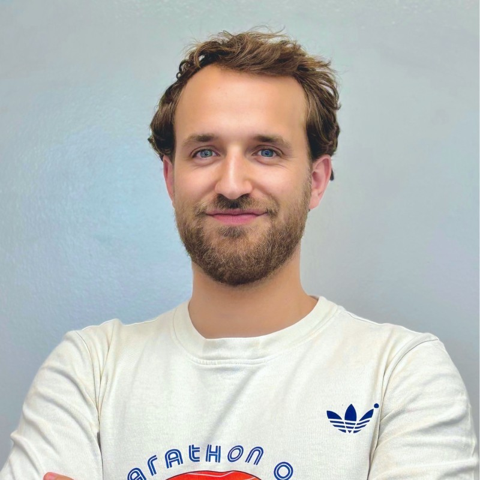

Francisco "Kiko" Tajada
Perpetual learner · Zurich, Switzerland
Connecting the dots across strategy, supply chain, and finance — blending creativity with analytical rigor to drive impactful results.
Currently at adidas in Lucerne, leading digital process management within Global Product Supply. Industrial Engineer by training, CFA Level II candidate by conviction.
Currently
Experience
Senior Manager, Global Product Supply — Digital Process Management
Oct 2025 – Present
+
Part of Global Product Supply Planning team. First-level support of SAP applications used in Supply Planning, acting as interface between Tech and Business users.
Manager, Supply Chain Head Office
May 2023 – Present
+
Jan 2024 – Sep 2025 — Chief of Staff to VP, Global Logistics
- Supported VP designing and driving the strategy of the team across selected projects and initiatives
- Created templates and frameworks for analyzing Logistics Operations performance
- Organized the adidas Logistics Summit in Vietnam (80+ attendees)
- Gained people leadership experience managing an intern and driving team objectives
- Supported strategic updates, Board presentations, and global market calls
Jun – Dec 2023 — Chief of Staff to SVP, Global Product Supply
- Coordinated Season Readiness check-ins with cross-functional teams
Specialist, Global Product Supply — Master Planning
Sep 2021 – May 2023
+
Master Planning sets the planning framework to execute adidas' Integrated Business Plan and product supply strategy.
- Led Robotic Process Automation within Master Planning — sole "citizen developer" to build a full unattended RPA solution from scratch using Git, VB.net, and Jenkins
- Part of Game Plan team: monthly availability projection reporting for the factory supplier base, progressing from Accessories & Gear to Footwear (the largest division)
Business Process Optimization Intern
Sep 2020 – Aug 2021
+
Full-time one-year internship in the External Manufacturing department. Managed continuous improvement projects aimed at process excellence.
Mechanical Engineering Intern
Jul 2018 – Jan 2019
+
Dematic is a global leader in supply chain automation. Supported engineers in designing layouts for material handling systems, tailoring solutions to client requirements and optimizing operational efficiency.
Education
Strong foundation in mathematics, statistics, physics, and systems optimization. Expertise in organizational strategy, business operations, project management, and resource optimization.
Advanced expertise in financial analysis, valuation, risk management, and investment strategies — enhancing the ability to make data-driven decisions across global markets.